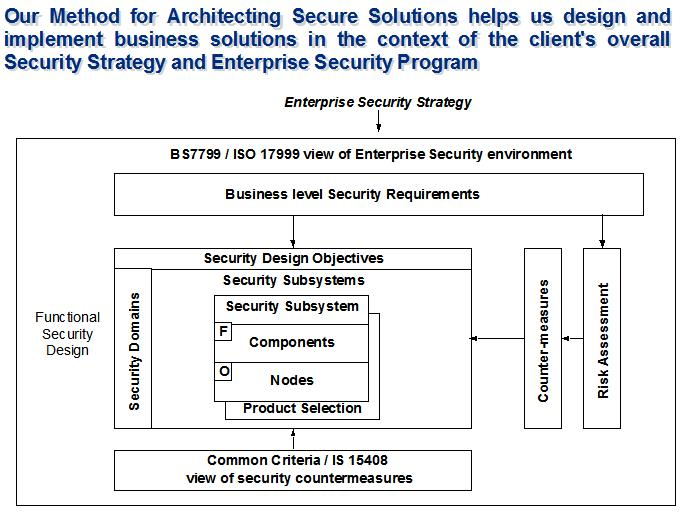

| Guideline: Designing for Security |
 |
|
1 IntroductionSecurity must be an integral part of any IBM engagement. In this era of increasing attacks on corporate networks and the emphasis on trust our customers expect IBM to develop sites that will meet their security and privacy needs. Failure to do so can result in losses to the client and to IBM. Poor security in delivered systems can negatively impact the client’s and IBM’s public image, cause embarrassment, loss of revenue/business, loss of customers, and/or result in legal implications. This Security technique paper describes, to engagement managers, the approach to be used to ensure that:
Security must be designed into the application from the beginning. Attempts to add it after a design is finalized, or worse yet, implemented, are extremely expensive, ineffective or both. Decisions about the amount of acceptable risk in the final implementation are business decisions that should be made by the client with appropriate inputs on the potential results provided by the IBM team. Designing effective security strategies involves complex decisions based on hundreds of technical and process oriented choices. A security professional should be contacted and included in every engagement - there are over 600 worldwide. The objective of this technique is to ensure that a design satisfies security requirements. The technique is used throughout the solution design, development, and deployment stages. It describes the methods to be employed, issues to be considered, and how to approach the design and validation of security characteristics. It is applicable to all systems. The graphic below provides an overview of the methodology used by IBM Global Services personnel who have been trained in IT Security analysis and design.  Figure 1. MASS Overview Diagram As the design evolves throughout a project, it is common for different parts of it to be at different levels of abstraction (and detail), and the technique should be applied flexibly to reflect this. As part of using this technique, overall security requirements for the system will be captured in the business requirements. It is important to identify the business drivers of the security and privacy implemented in the final solution plus the security architectural principles. This provides a way of documenting the risk acceptance decisions of the business managers. The sequencing of security analysis and design in relation to other work on the solution varies according to project circumstances. There are often tradeoffs with other objectives and requirements; for example, delivering high security may compromise a need for high performance. The final decisions for these tradeoffs need to lie with the client with appropriate support from the IBM team. The activities and tasks performed in support of this technique require the extensive use of intellectual capital only available to IBM trained security consultants and architects. It is important that these individuals be included in the project from its inception. This technique is based on IBM’s proprietary Method for Architecting Secure Solutions (MASS). MASS is firmly based on ISO-15408 Common Criteria, an internationally recognized standard for security assessment and design. 2 Context<REPLACE THIS TEXT with specific information that explains the conditions or situations that it applies to.> 3 StepsProject Definition - assist with security assurance elementsThe Security Architect or Consultant will identify the security portions of the engagement model and provide the template for inclusion into the overall project work breakdown structure. They will also work with the business consultants to identify any statutory requirements for security and privacy in the application. A. Requirements gathering –The security and privacy to be incorporated within the application must be based on firm business requirements of the client. The Security Consultant will assist the Business Consultants in identifying these requirements.
B. Derive Security Design Objectives from requirementsAfter the initial requirements have been gathered they are distilled into the seven security design objectives defined in MASS. These objectives can be summarized as:
These objectives are then validated with the client. C. Derive Security Domains, put onto Architecture Overview diagramSecurity Domains are used to layer protections and to separate the business assets and functions into domains appropriate to the protections required. There are five defined domains in the basic MASS architecture model; Uncontrolled, Controlled, Restricted, Secured, and External Controlled. The conduit between the Security Domains can also be defined, Trusted, Untrusted and Controlled. The identification of these domains, their definitions, and the controls required to transit the boundaries is another key security function. D. Derive Security Subsystems, map requirements to them & place in Security DomainsMASS defines five security subsystems; Access Control, Information Flow Control, Audit, Integrity, and Trusted Credentials. These subsystems are now mapped to the various security domains identified in the previous step. Each subsystem may show up in more than one domain and each domain will contain more than one subsystem. E. Derive component Models of Security Subsystems (i.e. create component architecture for each subsystem)Each of the defined security subsystems is composed of a number of predefined components. These components are conceptual in nature and do not map directly to security products. They express a business requirement for a set of functionality at a specific location in the design. They identify capabilities to support both normal and anomalous activities. These components are used to incorporate security into the overall design of the application at the component architecture level to support the business requirements and processes. This level of the design should be articulated with a diagram with enough textual description that explains the following features of the design:
F: Derive the use cases for the security operations of the application/networkThe required security use cases will vary based on the needs of the application. At a minimum they should include:
G. Derive operational Models of Security Subsystems (i.e. create operational architecture for each subsystem)The operational model includes the initial look at potential physical implementations of the various components. At this point the security components will be instantiated in the various products selected. Tradeoffs between performance, quality of service and security will be made. These tradeoffs must be identified, assessed against the security requirements and appropriate countermeasures developed. The operational procedures are defined based on product selection, policies and operational processes. Input is provided into infrastructure and networking designs. H. Revise Risk Assessment based on anomalous flow, derive countermeasures and design countermeasures into component model / operational modelAfter the initial iteration of the design the Security Consultant and Architect will validate it from an anomalous flow view. This is the “What happens if” analysis of the design. How is the design affected by out of bounds inputs, by individuals or processes entering or executing out of sequence, by attacks against the underlying infrastructure, etc. Any potential vulnerabilities are assessed for their impact to the business assets, then the countermeasures incorporated in the design are reviewed where appropriate. These are all risk-based decisions that should be approved by the client with appropriate support from the IBM development team. I. Review & iterateThis technique is utilized at each of the steps in the application design and development. At each step the process gets more detailed. Document all of the decisions made. Cross-reference them against the business requirements and the risk model developed during the early phases. Be sure to get the client to approve all of the decisions made that impact the security of the application and the business assets. Ongoing: Assurance TasksAs the design is being worked the system test plan is also being developed. The Security Consultant provides inputs into this plan in the areas of testing the security specific portions of the design and in testing the security of the other portions of the design. These tests provide the requisite assurance that the final implementation meets the client’s stated security and privacy needs. It is the final tie of the completed work back to the original requirements. The test team augmented by security specialist will perform the security testing. IBM Ethical Hackers from the Security & Privacy Services group should perform a final penetration test of the pre-production system. The security architecture is augmented to the Enterprise Architecture to maintain its vitality and integrated into infrastructure, networking and application changes. |
| © Copyright IBM Corp. 1987, 2012 All Rights Reserved Property of IBM These materials are intended only for use as part of an IBM engagement |